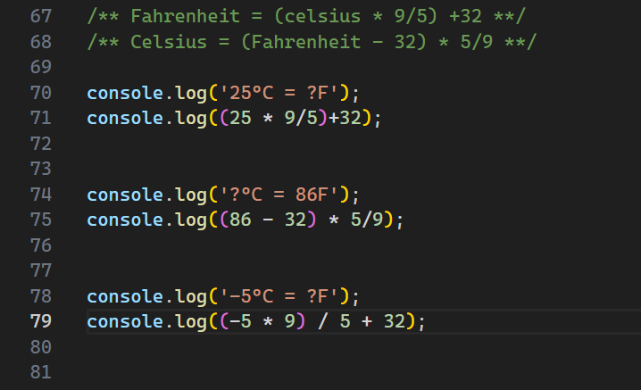
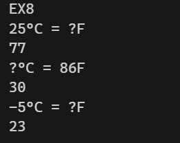
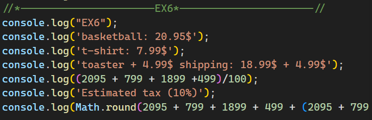
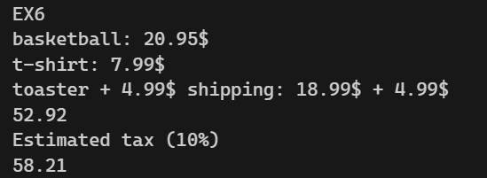

⚡ JavaScript Learning Journey - PART-1
Small exercises. New concepts. One step closer to building interactive websites.
My practice repository as I learn JavaScript with SuperSimpleDev, following my HTML and CSS studies.
Small exercises. New concepts. One step closer to building interactive websites.
My practice repository as I learn JavaScript with SuperSimpleDev, following my HTML and CSS studies.
This is where I practice JavaScript, experiment with examples, and document what I understand along the way. My goal is to move from writing simple instructions to building interactive websites and solving problems independently.
This repository is a learning journal that will grow as I continue the course.
From my first popup to calculating a shopping total:
alert('Hello!');
// Calculate prices in cents, then convert to dollars.
console.log((2095 + 799) / 100); // 28.94
// Round tax to the nearest cent before converting.
console.log(Math.round((2095 + 799) * 0.1) / 100); // 2.89
| Tool | Purpose |
|---|---|
| JavaScript | Instructions, calculations, and page changes |
| HTML | The page that loads my JavaScript |
| VS Code | Writing and organizing my files |
| Browser DevTools | Trying expressions and checking errors |
| Git & GitHub | Tracking changes and sharing my progress |
| File | Purpose |
|---|---|
index.html |
Entry page that loads the JavaScript file |
basics.js |
JavaScript practice and experiments |
README.md |
Learning notes and progress |
index.html in a browser.basics.js, save it, and refresh the page to try your changes.No package installation is needed for these browser-based exercises.
To load the script after the HTML has been parsed, use this inside <head>:
<script src="basics.js" defer></script>
innerHTML and innerHtml are different names.alert('Hello');
alert('Good job!');
document.body.innerHTML = 'Hello';
This replaces the content inside the page's <body> with Hello. The body must exist before this instruction runs.
2 + 2; // 4 — addition
10 - 3; // 7 — subtraction
3 * 4; // 12 — multiplication
10 / 2; // 5 — division
I learned the difference between integers, such as 2, and floating-point numbers, such as 2.8.
Multiplication and division happen before addition and subtraction. Parentheses let me control which calculation happens first.
2 + 3 * 4; // 14
(2 + 3) * 4; // 20
Some decimal numbers cannot be represented exactly by the computer:
0.1 + 0.2; // 0.30000000000000004
For these shopping exercises, I calculate prices using integer cents and convert to dollars at the end.
(2095 + 799) / 100; // 28.94
For a 10% tax, I round the calculated cents before converting:
Math.round((2095 + 799) * 0.1) / 100; // 2.89
The course introduced Math.round(). I also explored rounding up, rounding down, and removing the decimal part.
| Method | Meaning | Example | Result |
|---|---|---|---|
Math.round() |
Round to the nearest integer | Math.round(2.8) |
3 |
Math.floor() |
Round down | Math.floor(2.8) |
2 |
Math.ceil() |
Round up | Math.ceil(2.1) |
3 |
Math.trunc() |
Remove the decimal part | Math.trunc(2.8) |
2 |
Negative numbers helped me understand the difference:
Math.floor(-2.8); // -3
Math.ceil(-2.8); // -2
Math.trunc(-2.8); // -2
I am practicing how to describe a problem clearly, search for the JavaScript feature I need, and test an example before using it. Understanding why the code works is part of the exercise.
| Problem | What I learned |
|---|---|
Cannot set properties of null when changing the body |
Run the script after the body exists, using defer or placing the script before </body>. |
removeChild reports that a node is not a child |
The node must be a direct child of that parent; replacing innerHTML can also remove existing nodes. |
| Unexpected decimal results | Use integer cents for the price calculations in these exercises. |
| Choosing a rounding method | Decide whether I need the nearest integer, rounding down, rounding up, or truncation. |




I am practicing how to describe a problem clearly, search for the JavaScript feature I need, and test an example before using it. Understanding why the code works is part of the exercise.
This is a personal learning repository. Suggestions, clear explanations, and feedback are welcome through GitHub issues. I want to understand improvements and practice applying them myself.
Learning journal by Elmahdi Benabbou, following the JavaScript course by Simon from SuperSimple.dev.
The examples in this README summarize my current learning progress. Credit for the course and its teaching material belongs to SuperSimpleDev.
If this learning journey helps you, a ⭐ or useful feedback is appreciated. You can follow my progress on GitHub.
Learning by doing — one JavaScript lesson at a time. ⚡